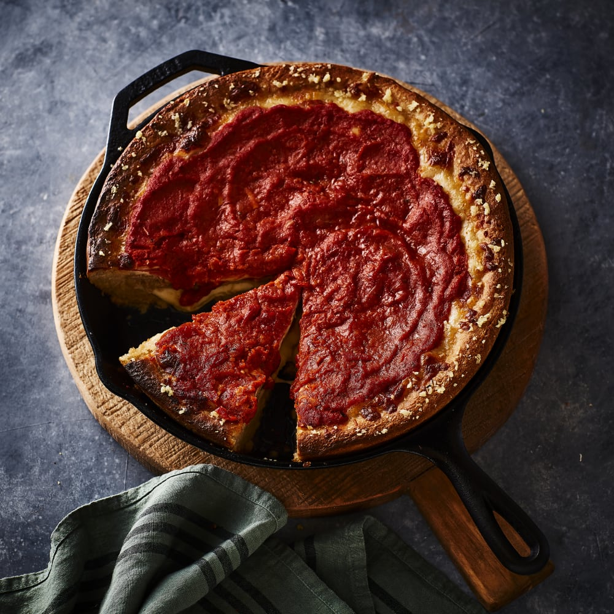

Deep Dish Pizza

Description
Total 5 hours (includes rising time). Active 40 mins. Makes 8 to 10 servings
Ingredients
- 4 cups all-purpose flour
- 1 cup sourdough starter
- 1/2 cup cornmeal
- 2 teaspoons sugar
- 1 teaspoon kosher salt
- 1/3 cup vegetable oil, plus more for skillet and bowl
- 1 pound Italian sausage, casings removed
- 1/2 bell pepper, finely sliced
- 1/2 yellow onion, finely sliced
- 24 ounces low-moisture mozzarella, half sliced (about 1 cup) and half shredded (about 3 cups)
- 1/2 cup sliced pepperoni (1 ounce)
- 1 cup jarred pizza sauce (8 ounces)
- 1/2 cup (1 stick) unsalted butter, melted
- 3 garlic cloves, minced
Steps
- For the dough: In a stand mixer fitted with the dough hook, add the flour, sourdough starter, cornmeal, sugar, and salt.
- Add 1 cup water and the oil to the mixing bowl and mix all the ingredients together on low speed until the flour is completely absorbed, about 2 minutes. The dough will still be pretty sticky, but don’t worry!
- Grease a medium bowl with 1 tablespoon of oil. Transfer the dough to the bowl and turn the dough over to coat it in the oil. Cover the bowl and leave the dough to rise at room temperature for 4 hours, or until it’s doubled in size.
- For the toppings: While your dough is rising, add your sausage, bell pepper, and onion to a large bowl. Mix until well combined, then turn out onto a piece of plastic wrap. Cover with another piece of wrap and use a rolling pin to flatten the sausage mixture into about a 10-inch-diameter patty. This will be the meat layer of your pizza.
- Preheat the oven to 500°F.
- Once your dough is risen and ready, grease a 12-inch cast-iron skillet with oil. Press the dough into the skillet with your hands, placing the side of the dough that was on the bottom during the rise on top. The dough should be in an even layer on the bottom and up the sides of the skillet.
- For the toppings, starting with an even layer of the sliced mozzarella, then the sausage patty. Top the sausage with the shredded mozzarella. Then add the pepperoni and finally the sauce over the top, spreading the sauce until it covers all the cheese.
- Bake until the crust is golden brown and the toppings in the center are bubbling, 25 to 30 minutes.
- While the pizza bakes, melt the butter in a small saucepan. Add the minced garlic and stir to combine. Brush the garlic butter around the edge of the pizza crust in the last 5 minutes of baking.
- Remove the skillet from the oven and let the pizza rest for 5 to 10 minutes. To serve, you can either slice it inside the skillet, or pull it out onto a serving board to slice